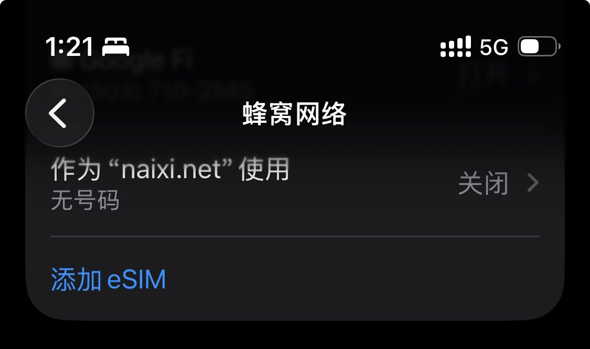
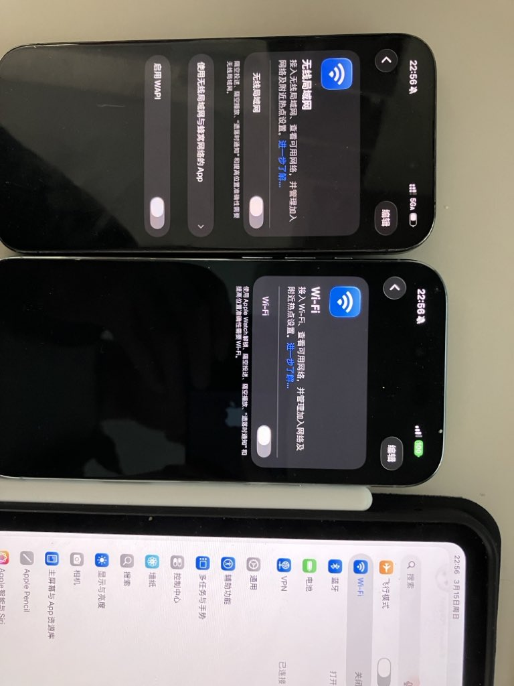

奶昔🥤
@realNyarime
除此之外，只有国行设备首次使用App需要手动允许联网，可在无线局域网（WLAN）设置控制应用联网权限，包括系统应用“设置”
还有eSIM功能，只有国行存在地理围栏存在提示，而外版却可以直接在中国大陆下载GSMA国际证书标准的eSIM Profile
以前禁止Wi-Fi，可能再过几年eSIM也放开了，放开只是时间问题🥹


雨夹雪❄️
@mizorewww
发现一个小细节，国行iPhone叫无线局域网，美版叫wifi，并且美版没有wapi（虽然这个也没人用） https://t.co/GvNR4IkgWc